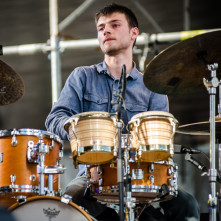
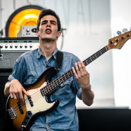
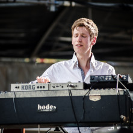

The legion of fiercely devoted UPTAKE diehards around the world expect nothing less than a smart, fully immersive, experiential journey through otherworldly soundscapes from each and every live performance, full-length album, and song.
Rightfully so, given the band's three decades of continually redefining the parameters of jazz, overcoming obstacles, surpassing critical expectations, and resisting the incessant winds of industry uncertainty. Staying an exciting course in a sea littered with also-rans, pretenders, and opportunists, Uptake's body of work endures with singular triumph.
So Far So Good is undisputedly the most ambitious undertaking by a band whose cerebral compositions already define the vanguard of jazz. "This is the next natural step in our evolution," declares longtime frontman Robinson Khoury. "This is a pinnacle moment for us. This is something we had to do".
So Far So Good is the culmination of everything that's come before and the arrival of the purest, most complete realization of Uptake imaginable. The experimentation with form, structure, length; orchestration; with epic storytelling; everything Uptake has done since the group began finds its ultimate fulfillment here. As songwriters, as performers, as a collective unit, Uptake is now the definition of fully realized potential.